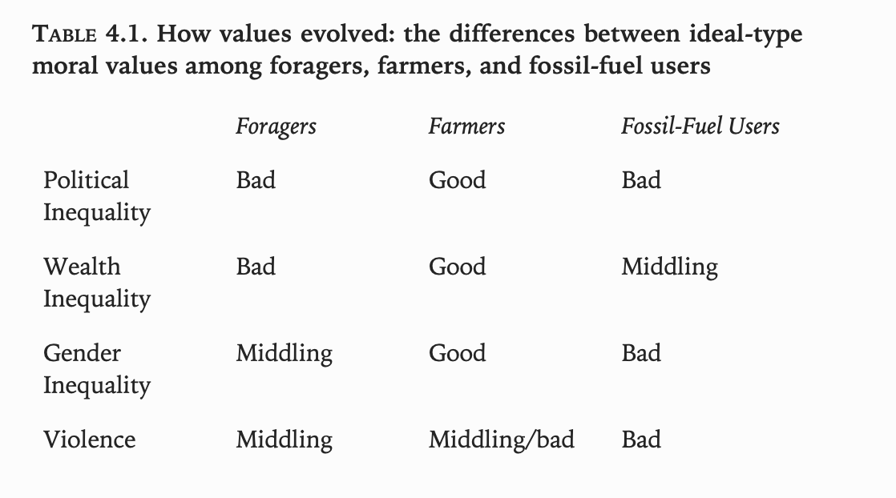
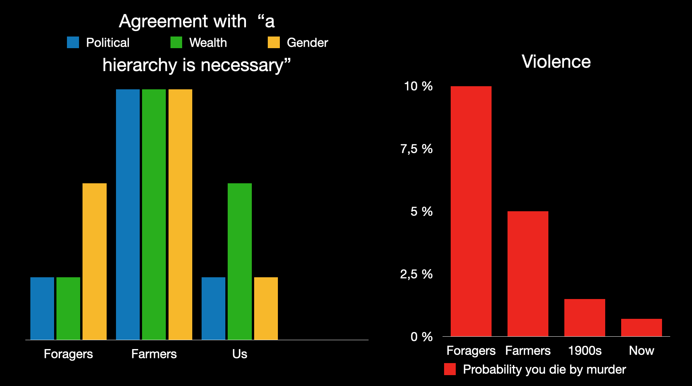

Two hundred years ago, most people lived in societies that considered slavery, war, and discrimination based on class, ethnicity, and gender to be justifiable. Today, most people live in societies that hold the opposite beliefs.
What changed? A simple and tempting narrative is that we have simply become wiser; that various Enlightenment philosophers, thoughtful activists, and other principled people figured out that the pre-industrial moral order is wrong and managed to persuade everyone to change.
It is true that many smart and principled people had good ideas and that this was a big proximate driver of better values. But is it a coincidence that this change in values happened around the same time as the industrial revolution?
What about the previous economic revolution, the agricultural one? Did that also coincide with a change in the values that people held? The evidence says yes – foraging societies tend to be more accepting of violence and far less accepting of hierarchy than farming ones.
The argument of Ian Morris' Foragers, Farmers, and Fossil Fuels is that these timings are not a coincidence. Societies that change their main method of getting energy also change their values, because some sets of values give greater success for a certain type of society. Farming societies that stick to anti-hierarchical forager attitudes won't survive competition with farming societies that learn to believe in hierarchies (maybe they won't be economically competitive and won't be able to field as big an army to defend themselves as the god-king next door can field to conquer them). Likewise, industrial societies that stick to inflexible hierarchies and elite-focused economies can't compete with more equal democracies that don't squander the talents of the non-elite, and maintain a well-looked-after middle-class of rich consumers and educated workers.
We can contrast two ways of trying to explain the history of values. The first says that the history of values is a history of ideas; a battle of ideas against other ideas, waged in the minds of people. The second says that the history of values is a history of what works best. The battle is between the benefits conferred by believing in certain ideas and those conferred by other ones, and it is waged out in the real world, where empires fall or rise based on whether they value the things that will lead them to success.
It is clear that neither style of explanation is enough on its own. No matter how persuasive it can be made, a sufficiently destructive idea – as an extreme example, that everyone should commit suicide – will not find its adherents in charge of the future (or coming from the opposite direction: why do you think many religions are so big on the "be fruitful and multiply" point?). On the other hand, no matter how practically useful a certain idea is, someone has to have the idea and persuade other people to adopt it as a value before it has a chance of spreading because of its practical benefits.
The question, then, is just how far can we push the deterministic account, where the methods of energy capture constrain values. In Ian Morris' telling, the answer is surprisingly far, and if his account of the history of values is correct, I agree with him (in particular, the similarities of farming society values across continents is hard to explain otherwise). However, I think Morris, along with most people who advance or accept similar arguments, goes too far with the moral pragmatism that these ideas may be thought to imply.
But first: what values did foragers, farmers, and fossil fuel users actually hold, and what is Morris' energy-based explanation of the changes between them?
Foragers
Everyone has some idea of what a forager or hunter-gatherer is, but since we want to deal with differences between foragers and farmers, we want a clear idea of where the line is. Morris cites a good definition by Catherine Panter-Brick: foragers are people who "exercise no deliberate alteration of the gene pool of exploited resources". If you plant and harvest a few naturally occurring plants, you're still a forager, but when you start refining the crops generation by generation or breeding the animals, that's the point when you become a farmer.
Of course, there is a vast amount of variance in culture, lifestyle, and values between different forager bands. To almost every generalisation about foragers, there exists some tribe that does the opposite. However, Morris argues that for each main type of human society (foraging/farming/industrial), it is useful to talk about the average set of values such societies held or tended to develop towards, at least in terms of the broad categories of tolerance of political/economic/gender hierarchy and propensity to violence. This covers up lots of important questions – different societies may have justified violence under different circumstances, or had different reasons for why economic inequality was acceptable, but such differences are sucked up into one category and ignored in this sort of analysis. That this makes sense will become apparent once we see that foragers, farmers, and fossil fuel users can be sensibly compared and contrasted even at this very general level.
In some ways, forager values are familiar. Even among foragers, possession and ownership are big deals, with every item generally having an owner. In other ways, they're surprisingly different.
Take violence. Though it's very difficult to come up with exact figures for anything to do with foragers (ancient foragers left behind only bones and tools, and modern foragers only live in places that farmers didn't want, so might not be a representative sample), the chance of dying by murder may have been around 10% in an average forager tribe, compared to 0.7% today, 1-2% across the 1900s (including all wars), roughly 5% in your average farming society or in the most murderous countries of today, and 20% for Poland during World War II.
This was not recognised by anthropologists until the 1990s or so because, as Morris explains:
"[T]he social scale imposed by foraging is so small that even high rates of murder are difficult for outsiders to detect. If a band with a dozen members has a 10% rate of violent death, it will suffer roughly one homicide every twenty-five years, and since anthropologists rarely stay in the field for even twenty-five months, they will witness very few violent deaths."
This is why Elizabeth Marshall Thomas' !Kung ethnography was called "The Gentle People", even though "their murder rate was much the same as what Detroit would endure at the peak of its crack cocaine epidemic".
Foragers are also extremely averse to hierarchy. Perhaps the best summary is given by a !Kung San forager asked about the absence of chiefs:
"Of course we have headmen! In fact we’re all headmen … Each one of us is headman over himself!"
It's not just that foragers don't have strict hierarchies and this behaviour falls out naturally as a result; they are actively opposed to any sort of hierarchy or inequality. Material inequality is considered morally wrong, and fairness essential. Pressure to share spoils is applied liberally. And as in any group of humans, you'll have upstarts who try to achieve greatness and power, but such people usually have opposition groups immediately form to hold them back. Anthropologist Christopher Boehm calls these "reverse dominance hierarchies"; Morris translates this as "coalitions of losers".
The one sort of inequality that foragers aren't opposed to is gender inequality, with the dominant role in politics and violence generally falling to men (as an example of this attitude, Morris cites a forager of the Ona people (also known as the Selk'nam or Onawo) saying "the men are all captains and the women are sailors"). However, the gender inequality in forager societies is still on a different level from the extreme gender inequality and regimentation of farmer societies, and attitudes about sex were looser too. Morris writes that "abused wives regularly just walk away [...] without much fuss or criticism, and attitudes towards marital fidelity and premarital virginity tend to be quite relaxed".
Farmers
As with foragers, Morris lumps together farming societies into one ideal type, labelled Agraria by Ernest Gellner. As before, this covers up a lot of variation (in particular, he identifies horticulturalists, city states like classical Athens or medieval Venice, and proto-industrial nations like Qing dynasty China, Mughal India, Ottoman Turkey, and Enlightenment Western Europe as the three extremes of Agraria), but Morris argues "the exceptions and sub-categories should not be allowed to obscure the reality of an ideal type representing in abstract terms the core features of peasant farming society". He cites Robert Redfield:
"[I]f a peasant from [any one of widely separated farming societies] could have been transported by some convenient genie to any one of the others and equipped with a knowledge of the language in the village to which he had been moved, he would very quickly come to feel at home. And this would be because the fundamental orientations of life would be unchanged. The compass of his career would continue to point to the same moral north."
So what is the moral north of farming societies? Perhaps surprisingly, it's almost as hard to make definite conclusions about what anyone other than the elite thought in agrarian societies as it is to make conclusions about foragers.
While the elite read and wrote a lot, they didn't care much about what the peasants thought, and peasants were not literate. The most literate ancient societies – for example Athens in the 4th and 5th centuries BCE – had a rudimentary literacy rate of 10%, so one person in ten might be able to glean some meaning from words, but how well they could set down their thoughts on moral values is a different question. To get higher literacy rates, you have to move in time to the early second millennium, and in space to urban China or western Europe. Morris writes that "genuine mass literacy, with half or more of the population able to read simple sentences, belongs to the age of fossil fuels”, and because of this, most of “our evidence for peasant experience comes from archaeology and accounts by twentieth-century anthropologists, rural sociologists, and development economists." If history is the written record of the past, then the majority of the population lived their lives outside history until the past century or two. (Perhaps we might even say that history in this sense only began with the internet age, when the private lives of everyone began being set down.)
Before going into the trickier question of values, we can compare foragers and farmers in some simple ways. First, their energy consumption was higher. Foragers, like all humans, need to eat about eight and a half megajoules (2000 kilocalories) of energy as food per person per day to stay alive. Add cooking, and total energy consumption roughly doubles. The energy use of agrarian societies starts out at a forager level of around 20 MJ/person/day (5000 kcal), and goes up to the 100-150 MJ/person/day level (compare to 500 MJ/person/day (120 000 kcal), plus/minus a factor of two or so, for modern rich industrial nations).
Second, farming societies have very roughly perhaps half as few violent deaths as foragers, due to the existence of governments that at least occasionally kept the peace.
However, their life wasn't better on most metrics. In contrast to the literature (both then and now) full of "tales of vagabonds, wandering minstrels, and young men striking out to make their fortunes", "most farmers lived in worlds much smaller than most foragers had done, and never went much more than a day or two’s walk from the villages they were born in". Not only this, but:
"Excavated skeletons suggest that ancient farmers tended to suffer more than foragers from repetitive stress injuries; their teeth were often terrible, thanks to restricted diets heavy on sugary carbohydrates; and their stature, which is a fairly good proxy for overall nutrition, tended to fall slightly with the onset of agriculture, not increasing noticeably until the twentieth century AD."
No farming society even managed to escape the repeating cycles of population growth and starvation that foragers were also prone to, despite having more direct control over their food supplies. Populations would increase to keep pace with the good times until all farmers were slaving way to stay at subsistence levels given the crowdedness and quality of the land. Then many would starve to death when the bad times came.
Another trend across the history of farming societies is three things coinciding: energy consumption rises above 40 MJ (twice the minimum agrarian level and the typical forager level), towns grow past 10 000 people, and a few people take charge and start bossing around the others with their governments.
In farming societies, widespread respect and reverence for hierarchy was internalised by everyone. Morris writes that “[f]arming society often seemed obsessed with the symbolism of rank”, and twentieth century anthropologists "regularly found that having a healthy respect for authority – knowing your place – was a key part of their informants’ sense of themselves as good people". This often came, and still comes, as a surprise to non-farmers:
"[W]hen European reformers began venturing outside their urban enclaves into the countryside in the eighteenth century, they were often astonished that instead of complaining about inequality and demanding the redistribution of property, peasants largely took it as right and proper that most people were poor and weak while a few were rich and strong."
Especially revered was the "Old Deal", Morris' term for the generalised social contract between classes in agrarian societies: that some have the duty to be commanders (or "shepherds of the people", in the preferred phrasing of many a king), others to obey those commands, and if everyone follows this script then things work fine.
Even when the powerful were questioned, the questioning didn't go as far as the Old Deal itself. In fact it rarely reached the king. “The tsar is good but the boyars [aristocrats] are bad", goes a Russian saying; even those who protested the powerful assumed that the highest levels of power must be good and holy, and the problems came from their will being incorrectly carried out by lesser lords. Even when the king himself came under fire, the Old Deal itself, or the inequality it entailed, were not questioned. The most common sort of rebellion against a king took what Morris calls a "good-old-days form": the justification was that the king had broken the Old Deal (or been abandoned by the gods or lost the Mandate of Heaven) and the urgent need was to restore the days when the right dictator was in charge, not abolish the dictatorship in the first place.
There were exceptions – in the 1640s some Chinese peasants called themselves "Levelling Kings" and went around questioning who gave their rulers the right to call them serfs, and of course there's the gradual English case and the rather more abrupt French case – but these only came when the societies in question started hitting energy consumptions of 150 MJ/day, the very highest end that agrarian societies could achieve without a full-on industrial revolution.
(Morris implies that the energy consumption is the cause. This seems backwards; an explanation running through the institutions and organisation needed to sustain this energy level seems much more reasonable. In general, perhaps when Morris talks about "energy consumption", you should read "the societal factors that enable higher energy consumption" in its place.)
Given how anti-hierarchy foragers were, how did this come to be? Were the peasants all forced into a rigid hierarchy by ruthless elites?
'“You may fool all the people some of the time; you can even fool some of the people all the time; but you can’t fool all the people all the time,” Abraham Lincoln is supposed to have said (unless it was P. T. Barnum). But Korsgaard and Seaford apparently think that Lincoln/Barnum was wrong, and that for ten thousand years everyone in Agraria was led by the nose—women by men, poor by rich, everyone by priests—and robbed blind. This I just cannot credit. Humans are the cleverest animals on the planet (for all we know, the cleverest in the whole universe). We have worked out the answers to almost every problem we have ever encountered. So how, if farming values were really just a trick perpetrated by wicked elites, did they survive for ten millennia? Most of the farmers I have met have been canny folk; so why could farmers in the past not figure out what was going on behind the wizard’s veil?
The answer, in my opinion, is that there was no veil. The veil is a figment of modern academics’ imaginations, made necessary by the assumption that only a tiny elite could possibly have thought that hierarchy was a good thing. In reality, farmers had farming values not because they fell for a trick but because they had common sense.'
It is clearly a mistake to think that farmers participated in farming societies and its values through gritted teeth. However, I don't think it was so much farmers' common sense that made them adopt farming values. Societies that brainwashed their members into sincerely accepting farming-era hierarchies did better, and eventually all farming societies mastered this art.
Specific inequalities: forced labour and patriarchy
In addition to the general extreme hierarchy of farming societies, there are two specific types of inequality that are both interesting in their causes and tragic in their consequences.
The first is slavery, and forced labour more generally. Both are almost entirely absent in foraging bands, which might take captives from other tribes but usually eventually integrate them into the tribe rather than keeping them forever as slaves. In contrast, some form of forced labour is found in almost every agrarian society.
Why? Because financial institutions weren't strong enough. Markets for labour existed almost everywhere, but there was a problem: “anyone who had enough land to support a family preferred to make a living by working it rather than by selling labor”, because, without reliable banks for everyone, keeping a good farm was the only robust way to accumulate and maintain wealth, especially for your children. When it was time for a big construction project (maybe the pharaoh died and you need a pyramid to bury him in), even wealthy employers like the state couldn't always hire enough workers. Often they resorted to violence to lower the costs of labour. Violence, after all, came cheap.
The second specific kind of inequality was male domination and strict gender roles. Morris offers a two-pronged explanation. First, farmer men had more reason than forager men to keep farmer/forager women under control:
“The main reason that male foragers generally care less than male farmers about controlling women [...] is that foragers have much less to inherit than farmers. [...] [Q]uestions about the legitimacy of children matter a lot less than they do when only legitimate offspring will inherit land and capital.”
(We might ask why farming societies were so strict about the legitimate offspring inheriting thing, but perhaps this is a case of biological values limiting the space of cultural variation.)
Second, gender roles became more regimented out of necessity. Agricultural work – plowing, manuring, and irrigation – relies on brute upper body strength, which favours males. Farmers worked harder in general than foragers, so more male-specific strength-based work also pushed everything else – home upkeep (which foragers didn't need to do) and food processing – onto women. As early as 7000 BCE, skeletons from Syria suggest that both genders regularly carried heavy loads, but only women had an arthritic condition caused by kneeling and footwork, probably as a result of grinding grain.
Finally, child bearing is obviously restricted to women. With the advent of farming, the doubling time for populations fell by a factor of five, from ten thousand to two thousand years. Infant mortality seems not to have changed, so this is due to increased birth rates alone.
Morris writes that this decision on gender norms seems so obvious that "no farming society that moved beyond horticulture ever seems to have decided anything else". According to him, "if we sit theorizing in our fossil-fuel studies" we might imagine an alternative were women had the upper hand, "sending otherwise-useless men out to labor for them in the fields, but in reality, the organizational needs of farming societies gave men the means to inflict devastating economic pain on faithless wives while also raising the costs for men of failing to deter women from bringing cuckoos back to the nest". The empirical correlation between gender inequality and farming societies seems strong and Morris' arguments are plausible, but whether they're the final word is less clear.
Of course, you can't hold everyone down all the time. Morris lists many historical cases of people who were slaves and/or women, but nevertheless defied expectations and attained great success. For example, Morris tells the story of an Athenian slave banker called Pasion, who did so well that he was eventually not only able to buy his own freedom but also the bank itself.
(Interestingly, Wikipedia tells the story slightly differently, saying he was manumitted as a reward for his work, and inherited the bank after his former owners retired, rather than by buying it outright. Wikipedia cites the 1971 Athenian Propertied Families by J. K. Davies; Morris cites Edward Cohen's Athenian Economy and Society and Jeremy Trevett's Apollorodus Son of Pasion, both from 1992. I don't know who to believe, or whether a consensus exists.)
Morris' harsh conclusion is that both forced labour and patriarchy were "functionally necessary to farming societies that generated more than 10k kcal/cap/day [42 MJ/cap/day]”.
Fossil-fuel users
Many places underwent the agricultural revolution independently of each other, because farming spread slow enough that distant people could invent it on their own before the waves of someone else's discovery of farming reached them. In contrast, the industrial revolution happened in north-west Europe fast enough, and gave big enough advantages, that no other region had an independent industrial revolution.
The culture and values of the post-industrial West – democracy, human rights, individualism, market-orientedness, and so on – are often labelled Western. In some sense this is a tautology; by definition, these are the values that Western countries have at the moment. The label is also used in a deeper sense, to mean that there is some kernel of Westernness in these values that makes them the logical conclusion of pre-industrial Western thought, and perhaps incompatible with different cultural bases.
One consequence of Morris' arguments is that this perspective is wrong. What we might call Western values are no more Western values than farming-era values are Sumerian values (or Indus Valley values or Mesoamerican values or ...); the reason Western values are called Western values but farming values aren't called Sumerian values is that the industrial revolution spread faster than the agricultural one. To explain Western values we should look not at ancient Greek philosophers and whatnot but at the demands of industrialised societies.
This does not mean that every industrialised society will approach the West in its values, only that the pressures are there (and wily enough dictators or future technological trends may be enough to avoid them). It might also be that the reason that Europe underwent an industrial revolution while other societies at the edges of agrarian achievement did not is that, by accidents of history and geography, pre-industrial north-west European values were closer to modern industrial values than those of the other societies that have stood at the cusp of industrialisation.
But the overall conclusion remains: "Western" values are the universal values that industrialised societies tend towards. The conflict between Boko Haram or the Taliban and the West, to use two of Morris' examples, is not so much a conflict of culture versus culture, but of era versus era; a last stand of the hierarchy- and patriarchy-obsessed farming values that were held by everyone (except a forager here or there) until a few hundreds years ago. On a more granular level, the steady retreat of discrimination and formality from Western societies is simply the gradual acceptance that these vestiges of the farming era are no longer useful.
As with the transition to farming society, there's the question of how people eventually reached almost opposite stances of what their ancestors had believed. Unlike with the agricultural revolution, the question is especially pressing because the timescale of the changes is so short. But once again, a lot of it was driven by economics.
The first step was people moving from countryside farming to factory jobs:
"Nineteenth-century sources make it very clear that entering the wage-labor market could be a traumatic experience, requiring workers to submit to strict time discipline and factory conditions unlike anything they had known in the countryside; and yet millions chose to do so, because the alternative—hunger—was worse.
So eager were poor farmers for dirty, dangerous factory jobs that British employers only needed to increase wages by 5 percent (in real terms) between 1780 and 1830, although output per worker grew by 25 percent. Wage increases accelerated only in the 1830s, and even then only for urban workers. The great motor was productivity, which was now rising so high that employers began finding it cheaper to share some of their profits with their workers than to try to break strikes. (In another great irony, by the time that Dickens, Marx, and Engels were writing, wages were rising faster than ever before in history.) For the next fifty years, wages rose as fast as productivity; after 1880, they rose even faster. By then, incomes were beginning to rise in the countryside too.”
One resulting value change was the abolition of forced labour:
“By making wage labour attractive enough to draw in millions of free workers, higher wages made forced labor less necessary, and because impoverished serfs and slaves—unlike the increasingly prosperous wage labourers—could rarely buy the manufactured goods being churned out by factories, forced labour increasingly struck business interests as an obstacle to growth (especially when it was competitors who were using it).”
The farmer-era justifications for gender hierarchy also broke down. First, industrialised societies had less need for brute strength and more need for organisational work, in which there is no gender disparity. Second, birth rates eventually went down, reducing the amount of time women spent on children. As a result, almost universal male dominance during the farming era has given way to a world where 81% of people say gender equality is important, including 98% in Britain but also over 90% of Indonesians and Turks and even 78% of Iranians (India, with a very low 60% and a huge population, is probably the biggest drag on the average).
Morris offers a great summary of the principles of success in agrarian versus industrial societies:
“Agraria had worked by drawing lines, not just between elite and mass or men and women, but also between believers and nonbelievers, pure and defiled, free and slave, and countless other categories. Each group was assigned its place in a complex hierarchy of mutual obligations and privileges, tied together by the Old Deal and guaranteed by the gods and the threat of violence. Fossil-fuel societies, however, work best by erasing lines. The more a group replaces the rigid structure of figure 3.6 with the anti-structure of figure 4.7—a completely empty box, made up of interchangeable citizens—the bigger and more efficient its markets will be and the better it will function in the fossil-fuel world.”

The most successful agrarian social structure have a social structure like the one above; the most successful industrial societies look like this instead:

This, in a nutshell, is why agrarian societies tend towards extreme hierarchy while industrial societies tend towards a social structure of interchangeable mobile individuals, free to do what they want and incentivised to slot themselves wherever they create the most value (at least economically).
With industrialisation, we've managed to roll back the discrimination and hierarchy of the farming age. We've even gone back to valuing fairly flat political hierarchies like the foragers (though we maintain them through democratic institutions rather than "coalitions of losers"), and become more egalitarian about gender than the foragers were, all the while living in societies far less violent than the average hunter-gatherer band.
There is one area where we're more tolerant of hierarchy than foragers, though: economic inequality. Once again the reason is practical:
"[...] Industria can flourish only if it has affluent middle and working classes that create effective demand for all the goods and services that fossil-fuel economies generate, but on the other, it also needs a dynamic entrepreneurial class that expects material rewards for providing leadership and management. In response, fossil-fuel values have evolved across the last two hundred years to favor government intervention to reduce wealth equality—but not too much.”
However, even then we still abhor the farmer-era standard of seeing it as fair when the elite extract as much as they can from everyone under them. In fact, merely the fact that calling elites extractive has become a good political weapon shows how far we've come – as discussed in the farming section, farming-era people saw ruthlessly extractive elites as part of a fair social contract.
A summary of value evolution?
We've just gone over a lot of detail about foragers, farmers, and fossil-fuel user values, and some reasons why values might have developed in the way they did. Is this a story of a random path through the stages of technological development, with harsh selection pressures making sure that societal values are dragged along for the ride? Or is there some pattern to the madness?
Morris' summary table does a good job of summing up the "what" of it:

Two things leaps out from this table, especially if we plot it graphically (as I've done on the slide pictured below): when it comes to attitudes towards hierarchy, fossil-fuel users are much closer to foragers than farmers are to anyone, and violence has gone down all along.

Other people have noticed this; economist and futurist Robin Hanson has written about the modern conservative-liberal axis mapping onto how willing people are to abandon farming ways and revert to more forager-like lifestyles and values as societies grow richer (as some people inexplicably prefer writing in digestible chunks rather than monolithic book-length blog posts, it's hard to give just one or two key links, but see for example here, here, here, and here).
Perhaps we can tell a story like this: in the beginning there were foragers. They tended to live as people tend to do, and value the things that evolution had crafted people to want. Humans being humans, there was a lot of politicking, and with no institutions to restrain it, a fair amount of violence. The outside world was harsh and outside anyone's control.
Then the agricultural revolution slowly creeped across the world. At first people lived as before, but generation by generation it turned out that the societies that managed to best persuade people to accept a bit more hierarchy – to show a bit more obedience to the chiefs, grant a bit less non-reproductive status to women – did a bit better than the others. Over millennia, such societies either had their tricks independently discovered or copies by others, or then outright went warpath to subjugate over societies to their rule – and, of course, preach their values, which (given human adaptability) they held sincerely, and with no idea that they thought differently from their distant ancestors. Eventually, the big tricks – organised religion and the god-kings keeping power by letting their henchmen extract as much as they could from their subjects – became almost universal. They also lowered the level of violence by imposing some amount of internal order and perhaps a culture promoting peaceful conflict resolution, if only to spare more strength to throw at neighbouring societies.
Then came the industrial revolution, and suddenly what mattered is how well a society could harness the talents of its members and establish efficient, competitive markets to drive innovation. This created pressures to democratise and erase lines between people. Technology and wealth also increased people's ability to control their lives. Rich and comfortable industrialised people no longer needed to abide by strict farming-era social rules to survive, and so slowly gave up on them, reverting back to more forager-like ways, though with the added advantages of unprecedented peace and material wellbeing.
How selection pressures change values
The reasons why societies tend to adopt pragmatic values are subtle; it's not as if people go around cynically holding the values that will best contribute to their tribe's or society's long-term success. As a result, Morris' descriptions of how selection pressures do their work are worth quoting at length.
First, here's how farmers ended up dominating the world in the first place:
“The first farmers had free will, just like us. As their families grew, their landscapes filled up. […] For all we know, some foragers in the Jordan Valley ten thousand years ago [chose to remain foragers]. The problem, though, was that they were not making a one-time choice. Tens of thousands of other people were asking the same question, and each family had to revisit the decision of whether to intensify or go hungry multiple times every year. Most important of all, each time one family chose to work harder and intensify its management of plants and animals, the payoffs from sticking with the old ways declined a little further for everyone else. Every time cultivators started thinking of the plants and animals on which they lavished care and attention as their personal gardens and flocks, not part of a common stock, hunting and gathering would become that much more difficult for those who stuck to it. Foragers who clung stubbornly and/or heroically to the old ways were doomed because the odds kept tilting against them.”
But how did this result in a world of dictator kings? Morris:
“We should probably assume that people tried lots of different ways to solve the collective action problem of how to create larger, more integrated societies with more complex divisions of labor as they moved from foraging to farming, but almost everywhere, it seems that the solution that worked best was the idea of the godlike king.”
Morris isn't very clear on why godlike kings, out of all possible forms of social organisation, worked best. We can imagine that it's hard to coordinate big armies for defence or offence without one, or that the symbolism of a godlike figurehead is the most reliable way to unite masses in a largely illiterate society, or vaguely gesture like Morris at the challenges of managing complex societies, but there doesn't seem to be much hard evidence or reason for a precise mechanism one way or the other, at least in Foragers, Farmers, and Fossil Fuels.
In general, collective action problems are important in any large organisation, and the simplest solution is complete centralisation; effectively reducing collective action problems back into individual action problems. Of course, this comes with all the cruelties and inefficiencies of real-world non-omnibenevolent, non-omniscient centralised decision-making. Given this, was the centralisation-vs-decentralisation tradeoff really so simple in the farming era that "godlike kings everywhere" was the only effective answer? Perhaps the tradeoffs really were that one-sided in the farming age, and this became a trickier question only in the industrial age when nurturing human talent and prosperity became key societal goals, and we created effective decentralised institutions like free markets and democracy. Or maybe there was a high but not extreme level of optimal centralisation, but the greed of individual rulers often pushed their societies past this level despite selection pressures working in favour of more responsibly lead societies, and it was only with the industrial age that these pressures became high enough to force the world away from the godlike king model.
Morris also describes the rise of capitalism:
“Capitalism took off in early-modern Western Europe because practical people figured out that this was the most effective way to get things done in an increasingly energy-rich world. Other people disagreed, and did things differently. Conflicts and compromises ensued as the competitive logic of cultural evolution went to work and drove the less effective ways extinct.”
Once again, I think the concept of selection pressures is a powerful lens, but the details of what drives the relationship are missing. What exactly was it about an energy-rich environment that made capitalism ideal? Even by Morris' own account, it seems the methods (e.g. complex manufacturing chains, mature financial institutions, etc.) required to most effectively extract and use energy given a particular technology level are what matter, not the raw total of joules consumed per person per day.
Respondents
Foragers, Farmers, and Fossil Fuels originated from the Tanner Lectures at Princeton. As part of the format, the book includes four responses to Morris' arguments, by Richard Seaford, Jonathan Spence, Christine Korsgaard, and Margaret Atwood.
On the whole, these responses don't add much to book, though they are helpful in making Morris elaborate on his arguments in the final chapter (cheekily entitled "My Correct Views on Everything").
Seaford and Spence provide short chapters that seem to be more about their own interests than Morris' arguments, and have the tone of questions asked by professors who slept through the talk but are still trying to say something insightful at the questions session.
Atwood, of The Handmaid's Tale fame, brings an arsenal of literary flair to bear on the task. She manages to make some good points (what about horse-riding pastoralists, who may have been the first large-scale war-makers?), along with some ridiculous statements:
“Several billion years ago, marine algae produced the atmosphere that allows us to breathe, and these algae continue to produce from 60 to 80 percent of our oxygen. Without marine algae, we ourselves cannot survive. During the Vietnam War, huge vats of Agent Orange were being shipped across the Pacific. Should they have sunk and leaked, we would not be having this conversation today.”
Let's do some very rough calculations. If all the Agent Orange deployed in Vietnam had been uniformly distributed across the Pacific, the mass concentration of its component acids (making the highest assumptions about what concentration it was sprayed at) would have been lower than one part in tens of trillions, a hundred thousand times lower than the mass concentrations of either lead or mercury already in the oceans. I couldn't find any study of what happens to algae in oceans if you dump Agent Orange on them, but one article about using algaecide in swimming pools says applying one ten-thousandth of the pool volume is typical. Another article mentions 5-10% as a common concentration, giving an algae-killing active ingredient concentration of maybe 1 in 100 000 in water. Agent Orange would need to kill algae at ten million times lower concentrations in oceans than commercial algaecide does in swimming pools for the Pacific's oxygen production to be destroyed.
(Or maybe Atwood means the literal sense that, because of various butterfly effects, any such change in history makes any present event, including this conversation, unlikely?)
By far the most substantive response comes from the philosopher Christine Korsgaard. She also has the idea that the farming era was an aberration, with a fresh interpretation:
“Instead of thinking that values are determined by modes of energy capture, perhaps we should think that as human beings began to be in a position to amass power and property in the agricultural age, forms of ideology set in that distorted real moral values [i.e. the values a society should hold], distortions that we are only now, in the age of science and extensive literacy, beginning to overcome.”
More significantly, she makes a distinction between the values a society holds and values that should be held (“positive values” and “real moral values” respectively), in contrast to Morris' arguments that such a distinction is meaningless and the only real distinction is between biological values and the form they take in a given society. Her response manages to pick away at Morris' nonchalant bulldozing of all philosophical subtleties.
Responding to this in the last chapter, Morris quotes, and then dismisses, Ernest Gellner's response to a social theory presentation at an archaeology conference: "They tell me you're a good archaeologist, so why are you trying to be a bad philosopher?". Perhaps he should have taken the question more to heart.
The future
The experiment of how to switch from foraging to farming was run many times. Forager bands in many places adopted farming techniques. Some of them had good ideas about how to structure their now-farming societies and succeeded, while others had bad ideas and perished, or were forced to copy techniques from the more successful.
In contrast, today the entire world has been thrust into the industrial age in the space of a few hundred years. There is only one experiment going on, and only one chance to get it right. There's no one to copy from to see what we should do, and no one to pick up the job if our attempt fails.
A successful transition to the industrial world, and whatever we might mark as the next step after that, is therefore less certain than the successful transition from foragers to farmers. The values that industrial life imposes on us might be better than the those of the farming age, but it is not yet clear if they will become as universal as hierarchies and kings once were.
(Better by which standard? I think humans are similar enough that there is a context-independent universal human ethical framework.)
Morris' arguments also lead to the question of how values might change in the future. Will the set of values that a society tends towards continue to improve as technology and wealth increases, or is the cuddliness of industrial values (compared to farming ones) a fluke?
The significance of Foragers, Farmers, and Fossil Fuels for this question is that we won't necessarily be the ones deciding. Over a span of years or decades, we can maintain our values through argument and education. Over a span of centuries, though, we can argue all we like, just as countless luddites and aristocrats railed against industrial/Western values, but if the game has changed and someone else's values make them play it better, it won't be enough. The harsh logic of evolution-like selection pressures can't be resisted forever; those that are best at spreading themselves into the future will eventually claim it.
Yuval Noah Harari, author of Sapiens, says that once we can engineer desires, the question is not "what do we want to become?", but "what do we want to want?". Morris counters that the real question is instead "what are we going to want, whether we want it or not?", and his answer is bleak yet pragmatic: "each age gets the thought it needs" ("needs" referring to "survival needs").
I don't think we need to be either nihilistic (in thinking that every set of societal values is as good as any other; some do a better job of serving universal human wants), nor pessimistic (in thinking that we can't do anything about a slide to worse values; we've never had more control over the future of our world).
Morris writes:
“Trying to imagine people who are somehow divorced from the demands of capturing energy and then speculating about what their moral values would be is an odd activity.”
I disagree. Of course we can imagine people living without being constrained by energy needs. How many science fiction writers or futurists haven't imagined a post-scarcity society?
In fact, aren't we well on our way towards such a world? Forager and farmer lives were significantly shaped by the need to get food, water, light, and warmth. Today in developed countries, these aren't free, but our lives aren't shaped by worrying about them. Sure, you need to work a job, but what you worry about in the job is likely very far separated from survival needs, and provided you have one and aren't massively wasteful, the water and light flows exactly as you want it. Technological progress removes difficulty and scarcity. Ultimately, there's no physical limit stopping us from removing scarcity considerations from our lives (or, more precisely, making them trivial enough that we don't need to worry about them; nothing is ever entirely free in this universe).
Once we've done so, no longer have to make compromises between what we should do and what we as a society are forced to value in order to survive. And so I think it is reasonable to imagine humans whose values aren't warped by survival needs; in fact such values might be good ones to aim for.
(Or maybe the need to focus at least a bit on survival is the one anchor to objective reality that prevents societies from losing themselves entirely to petty politicking and status games.)
Of course, there's always the problem of competition. What happens to our happy post-scarcity society when the people next door ratchet up the competition, say by throwing off all the safeguards around capitalism, or developing AIs or nanomachines or Robin Hanson's emulated minds, and then outcompeting us by adopting values more suitable to exploiting those technologies? Even if we ourselves don't suffer – say we have a big enough wall – in the long run we'd give up the rest of the world (or solar system or galaxy) to the pragmatic-valued competitors. At best, the long-term future looks like an oasis of human flourishing, surrounded by a galaxy-spanning alien economy with weird but morally neutral ways. (Imagine a forager tribe considering the massive and weird industrialised world around them; now imagine we're the foragers.) At worst, any good in our oasis would be outweighed by the morally bad machinations that fuel the endless growth of that weird galaxy-spanning alien economy.
So will we be forced to compromise ever more and more to avoid being outrun by those with fewer scruples about changing their values? Or can we build a world where human values are a winning strategy?
Look at our track record, I think we have a chance.